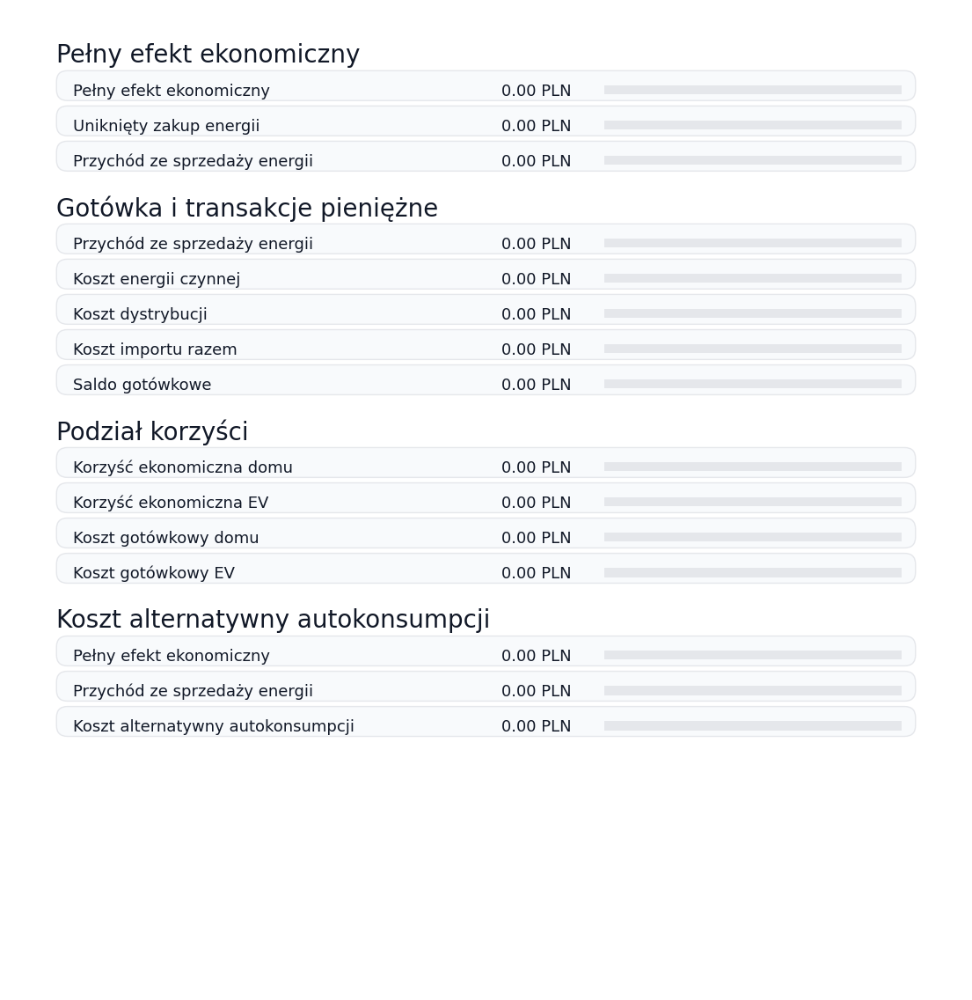

Ekonomia
Analiza kosztów i korzyści
Raport pokazuje koszty, przychody i pełny efekt ekonomiczny systemu. Najpierw znajduje się blok definicji i przykładów, a dopiero później rysunek oraz tabele z wartościami.
Jak czytać analizę kosztów i korzyści
Ten blok wyjaśnia znaczenie wartości pokazanych na rysunku. Chodzi o szybkie rozróżnienie efektu ekonomicznego, gotówki oraz kosztu alternatywnego autokonsumpcji.
- Pełny efekt ekonomiczny pokazuje łączną korzyść z pracy instalacji: uniknięty zakup energii oraz przychód ze sprzedaży energii. Przykład z tego okresu: 0.00 PLN unikniętego zakupu + 0.00 PLN sprzedaży = 0.00 PLN pełnego efektu ekonomicznego.
- Gotówka i transakcje pieniężne pokazują wyłącznie realny przepływ pieniędzy względem sieci. Przykład z tego okresu: 0.00 PLN przychodu ze sprzedaży - 0.00 PLN kosztu energii - 0.00 PLN kosztu dystrybucji = 0.00 PLN salda gotówkowego.
- Koszt alternatywny autokonsumpcji pokazuje, ile można byłoby uzyskać, gdyby energia zużyta lokalnie została sprzedana do sieci. W tym okresie wynosi 0.00 PLN.
- Interpretacja decyzji: Pełny efekt ekonomiczny jest większy lub równy kosztowi alternatywnemu autokonsumpcji, więc lokalne zużycie energii w tym okresie było ekonomicznie uzasadnione.
Rysunek analityczny

Pełny efekt ekonomiczny
| Nazwa | Wartość | Skala |
|---|---|---|
| Pełny efekt ekonomiczny | 0.00 PLN | |
| Uniknięty zakup energii | 0.00 PLN | |
| Przychód ze sprzedaży energii | 0.00 PLN |
Gotówka i transakcje pieniężne
| Nazwa | Wartość | Skala |
|---|---|---|
| Przychód ze sprzedaży energii | 0.00 PLN | |
| Koszt energii czynnej | 0.00 PLN | |
| Koszt dystrybucji | 0.00 PLN | |
| Koszt importu razem | 0.00 PLN | |
| Saldo gotówkowe | 0.00 PLN |
Podział korzyści
| Nazwa | Wartość | Skala |
|---|---|---|
| Korzyść ekonomiczna domu | 0.00 PLN | |
| Korzyść ekonomiczna EV | 0.00 PLN | |
| Koszt gotówkowy domu | 0.00 PLN | |
| Koszt gotówkowy EV | 0.00 PLN |
Koszt alternatywny autokonsumpcji
| Nazwa | Wartość | Skala |
|---|---|---|
| Pełny efekt ekonomiczny | 0.00 PLN | |
| Przychód ze sprzedaży energii | 0.00 PLN | |
| Koszt alternatywny autokonsumpcji | 0.00 PLN |